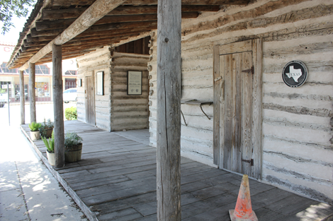

Module 8 Courts
The Court System of Texas
Introduction: The Texas Court System
Learning Objective
By the end of this chapter, you will be able to:
- Explain the structure and function of the judicial branch of the Texas government
Introduction
How much does a bar or restaurant have to do to protect customers from harm, especially harm resulting in part from their own actions?
In 2007, the Del Lago Resort, an upscale golf resort north of Houston, booked a wedding reception alongside the second night of a three-day college fraternity reunion. Members of both groups ended up in the resort’s bar, where a brawl ensued “involving twenty to forty ‘very intoxicated’ customers.” After they “waded into the scrum,” one of the fraternity members, Bradley Smith, was seriously injured.
Smith sued Del Lago in a Texas state district court, claiming the resort should have done more to protect him from harm. After nine days of conflicting testimony, jurors found Smith 49 percent liable for his own injuries, but found Del Lago 51 percent at fault and awarded nearly $1.5 million to Smith. The Tenth Court of Appeals in Waco reviewed the case and upheld the verdict, ruling that a “reasonable person who knew or should have known of the one-and-a-half hours of ongoing ‘heated’ verbal altercations and shoving matches between intoxicated bar patrons would reasonably foresee the potential for assaultive conduct to occur and take action to make the condition of the premises reasonably safe.”
On further appeal, the nine-member Texas Supreme Court upheld the Court of Appeals decision, issuing a 6-3 opinion. Chief Justice Nathan Hecht was one of three justices who wrote a dissenting opinion, disagreeing with the majority opinion. Among other reasons, Hecht felt Smith’s own actions played a larger part in his injuries than what had been determined by the lower courts. In Texas, you can’t recover at all if you’re more at fault than the party you’re suing. 49 percent is the greatest amount of fault you can have and still collect money.
Court decisions like this one determine what happens to the parties in that specific case, but they can also set precedents that will be followed by other courts for years to come. After the Del Lago decision, bars and restaurants throughout Texas took a hard look at their policies and procedures to try to prevent such altercations from occurring, and to make sure they could protect themselves from liability in the event of a similar disturbance.
In this chapter, we’ll take a look at the Texas Judicial System.
License and Attribution
CC LICENSED CONTENT, ORIGINAL
The Court System of Texas: Introduction. Authored by: Andrew Teas. License: CC BY: Attribution
Sources and Hierarchy of Law in Texas
Learning Objective
By the end of this section, you will be able to:
- Identify the sources and hierachy of law in Texas
Introduction
It’s often said that we are a “nation of laws,” but it is also true that we are a state of laws. This section explores the various sources and hierarchies of law in Texas.
Types of Law
Within codified law, there are two forms of law that the courts are concerned about within any legal system: civil law and criminal law.
Civil laws are rules and regulations which govern transactions and grievances between individual citizens.
Criminal law is concerned with actions which are dangerous or harmful to society as a whole, in which prosecution is pursued not by an individual but by the state. The purpose of criminal law is to 1) provide the specific definition of what constitutes a crime and to 2) prescribe punishments for committing such a crime. No criminal law can be valid unless it includes both of these factors.
Criminal justice is then primarily concerned with the enforcement of criminal law.
| Law | Definition | Punishment | Burden of Proof | Examples |
|---|---|---|---|---|
| Civil | concerns private rights | relief or remedy | x | a preponderance of the evidence |
| Criminal | type of case that violates a specific penal law | fine, imprisonment, or both | beyond a reasonable doubt | traffic violation, felony charge |
Table 5.1 Types of Law
Sources of Law
Sources of law in Texas include constitutional law, statutory law, administrative regulations, court precedence, and local codes and ordinances.
Constitutional Law
Constitutional law is the body of law which defines the role, powers, and structure of different entities within a state, including the executive, legislature, and the judiciary; as well as the basic rights of citizens and the relationship between the central government and state, provincial, or territorial governments. In Texas, constitutional law includes:
- National Constitution
- Texas Constitution
As we explored in Chapter Two, the Texas Constitution establishes the structure and purpose of the Texas government. The current Texas Constitution took effect on February 15, 1876.
Statutory Law
Statutes are laws passed by a legislature. In Texas, statutory law can consist of
- National Laws (laws passed by the national Congress)
- Texas State Statutes (laws passed by the Texas State Legislature)
Administrative Regulations
Administrative regulations are laws that govern the activities of administrative agencies of government. Government agency action can include rule making, adjudication, or the enforcement of a specific regulatory agenda. In Texas, adminisrative regulatons can consist of:
- National regulations
- Texas State administrative code
Court precedents
Precedent is a principle or rule established in a previous legal case that is either binding on or persuasive for a court or other tribunal when deciding subsequent cases with similar issues or facts. Common-law legal systems place great value on deciding cases according to consistent principled rules, so that similar facts will yield similar and predictable outcomes, and observance of precedent is the mechanism by which that goal is attained. The principle by which judges are bound to precedents is known as stare decisis (a Latin phrase with the literal meaning of “Let the decision stand”).
The courts considering the Del Lago case discussed in the introduction to this chapter looked at a variety of similar cases to determine the way responsibility for the plaintiff’s injuries should be decided.
Local codes and ordinances
A local ordinance is a law for a political division smaller than a state or nation, i.e., a local government such as a city or county.
Hierarchy of Law
The hierarchy of law in the Texas judicial system is relatively simple:
Constitutional Law overrules statutory law which in turn overrules administrative regulations which finally overrules local codes and ordinances.
Licenses and Attribution
CC LICENSED CONTENT, ORIGINAL
Law in Texas: Authored by: Andrew Teas. License: CC BY: Attribution
The Structure of the Texas Court System
Learning Objective
By the end of this section, you will be able to:
- Describe how state courts are structured in Texas
Introduction
Picture of Old Cora courthouse

Figure 5.1 Built in 1856, the Old Cora Courthouse is a split-log, one-room courthouse that also served as a post office when it was built. It is the oldest courthouse in Texas still standing, though it now only stands as a historic landmark. Image Credit: Nicolas Henderson License: CC BY
Even before Texas became its own Republic, Texas had a system of courts. As citizens of Mexico, Texans were given access to state and local courts created by the Mexican constitutions of 1824 and 1827. Appeals, however, were handled only in Saltillo, over 600 miles from the northern parts of the state.
Accordingly, the Republic of Texas and, later, the State of Texas established a judiciary with local access to both trial and appeals courts. Texas has more courts than any other state, creating more access to courts, but also additional costs.
The Structure of the Texas Court System
Although the Supreme Court tends to draw the most public attention, it typically hears fewer than one hundred cases every year. In fact, the entire federal side—both trial and appellate—handles proportionately very few cases, with about 90 percent of all cases in the U.S. court system being heard at the state level. The several hundred thousand cases handled every year on the federal side pale in comparison to the several million handled by the states.
State courts really are the core of the U.S. judicial system, and they are responsible for a huge area of law. Most crimes and criminal activity, such as robbery, rape, and murder, are violations of state laws, and cases are thus heard by state courts. State courts also handle civil matters; personal injury, malpractice, divorce, family, juvenile, probate, and contract disputes and real estate cases, to name just a few, are usually state-level cases.
In our legal system criminal cases are those where a defendant is accused of violating the law. If found guilty, a punishment ranging from a small monetary fine to the death penalty may be inflicted. All other cases are civil, ranging from negligence cases like Del Lago v. Smith to eviction, divorce and child custody, wills and estates, protective orders and the enforcement of business contracts.
In all cases, a trial court – generally with a jury of citizens – must determine matters of fact. Appellate courts are there only to determine matters of law did the trial court conduct its proceedings fairly and correctly? What sorts of courts handle judicial cases in Texas?
Types of Jurisdiction
Every court system has jurisdiction over certain cases, from enforcing traffic laws to hearing capital murder charges. There are three types of jurisdictions:
- Original Jurisdiction– the court that gets to hear the case first. For example, Municipal courts typically have original jurisdiction over traffic offenses the occur within city limits.
- Appellate Jurisdiction– the power for a higher court to review a lower courts decision. For example, the Texas Court of Appeals has appellate jurisdiction over the District Courts (see the hierarchy of Texas Court Structure in Section 5.2).
- Exclusive Jurisdiction– only that court can hear a specific case. For example, only the Texas Court of Criminal Appeals Court can hear appeals for death penalty sentences.
Judicial Hierarchy
The Texas court system is hierarchical, meaning cases start in local trial courts, then work their way up to appeals courts. State district courts have original jurisdiction, meaning that cases are generally heard by juries of citizens. District courts in rural Texas can be all-purpose courts – hearing all types of criminal and civil cases. District courts in urban areas often specialize. Harris County, with its population of more than 5 million, has courts specifically assigned only to criminal cases, with others specifically assigned to civil, juvenile and family cases.
Any case appealed from one of Texas’ 472 district courts goes to one of 14 courts of appeals, each of which hears all types of cases. From there, the system splits. Criminal cases appealed from any court of appeals go to the Texas Court of Criminal Appeals. All civil cases go to the Texas Supreme Court. These two co-equal highest courts have the final say on all cases in the state system, although some cases can be further appealed into the federal system.
Municipal Courts
Municipal courts are city courts, often with judges appointed by mayors and city councils – the only judges in Texas who are not elected by the citizens. They have exclusive jurisdiction over cases involving the violation of city ordinances (like building something without getting a building permit) but handle mostly parking and traffic tickets.
Justice of the Peace Courts
Texas has 822 justices of the peace (JPs), selected by voters in partisan elections. Harris County has 16 “JP” courts, but even rural counties have at least one. JPs are the true jacks-of-all-trades in the Texas judicial system. They handle traffic tickets and other low-level criminal offenses, civil cases involving amounts up to $20,000, debt collection cases, commercial and residential evictions, truancy – even inquests (declaring people dead) in all but the largest urban counties. Justices of the Peace do not have to be attorneys, and a majority of Texas JPs are, in fact, not lawyers.
Constitutional County Courts
The Texas Constitution assigns certain judicial powers to county commissioners’ courts, which are also the governing bodies of Texas counties. As a constitutional county court, they hold hearings on beer and wine license applications, assignment of the mentally ill to hospitals, juvenile work permits, and temporary guardianship.
County Courts at Law
Harris County has 16 county criminal courts-at-law, along with 4 county civil courts-at-law. The legislature has allowed counties specific numbers of these courts, depending on the county’s population. County criminal courts- at-law can handle cases involving up to a year in county jail, and where the fine would exceed $500. Civil courts-at-law handle disputes involving between $20,000 and $100,000, as well as civil appeals from justice of the peace courts. County court judges are elected by voters to four-year terms in partisan elections.
Probate Courts
Probate courts handle wills and estates for deceased persons in Texas’ largest counties. Judges are elected to 4-year terms by county voters in partisan elections. In smaller counties, these matters are handled by the local district or county court.
State District Courts
State District Courts are the starting point for serious criminal and civil cases in Texas. Civil cases involving more than $200 and criminal cases for which the penalty can involve the state prison system or the death penalty begin with a trial in state district court. District courts also have exclusive jurisdiction over divorce and land title cases. State District Judges are elected in partisan elections and serve 4-year terms.
Appellate Courts
Texas has 14 courts of appeal, each serving a specific set of counties. Each court has nine members, each of which is elected to a six-year term in a partisan election. The terms are staggered so that three of the nine positions on each court are placed before the area’s voters every two years. While each court of appeals has nine judges, the caseload for courts of appeal in Texas is staggering. For the sake of efficiency, nearly all cases are heard by three judge panels – allowing the court to triple the number of cases they can consider at any one time. Occasionally, a party to a particularly difficult or controversial case may petition to have the case heard en banc – meaning by all nine judges.
While the district courts from which a court of appeals’ appellate cases are referred may be highly specialized, the courts of appeals are not. All 14 courts have first appellate jurisdiction over every type of criminal and civil case.
Figure 5.2 Immediately northwest of the Capitol Building, the Texas Supreme Court and the Texas Court of Criminal Appeals meet here. Image Credit: Andrew Teas CC BY (https://creativecommons.org/licenses/by/4.0/)
If a case is appealed from one of Texas’ 14 courts of appeals, however, the system splits. Criminal cases go to the Texas Court of Criminal Appeals. Civil cases go to the Texas Supreme Court. Each of Texas’ two highest courts has nine members, elected statewide in partisan elections. Unlike courts of appeals, however, the Texas Supreme Court and Court of Criminal Appeals hear all cases en banc.
Diagram of the Bifurcated Texas Court System
The structure of the Texas court system is set up as a bifurcated system, meaning there are two highest courts of appeals for criminal and civil cases. The table below depicts the structure of the Texas court system with some additional jurisdiction and court information. Note that Juvenile Courts preside in the District Courts - In Texas, a juvenile is defined as young as 10 years old, and a juvenile can be convicted as an adult as young as 14 years old.
Figure 5.3 Structure of the Texas Court System. Image Credit: Texas Judicial Branch (https://www.txcourts.gov/media/1452084/court-structure-chart-february-2021.pdf) Court Structure of Texas February 2021
Licenses and Attributions
CC LICENSED CONTENT, ORIGINAL
Court Organization. Authored by: Daniel M. Regalado. License: CC BY: Attribution
The Structure of the Texas Court System. Authored by: Andrew Teas. License: CC BY: Attribution
PUBLIC DOMAIN CONTENT
Court Structure of Texas. Authored by: Texas Judicial Branch. Located at: http://www.txcourts.gov/media/1436909/court-structure-chart- jan-2017.pdf License: Public Domain: No Known Copyright
CC LICENSED CONTENT, ORIGINAL
The Court System of Texas: Introduction. Authored by: Andrew Teas. License: CC BY: Attribution
Texas’ Civil and Criminal Justice Processes
Learning Objective
By the end of this section, you will be able to:
- Explain the judicial procedures associated with civil lawsuits and criminal cases
Introduction
This section explores Texas’ civil and criminal processes.
Texas’ Civil Law Processes
Unlike the criminal justice system, which has an intentional bias in favor of the accused, the civil justice system is meant to be like a balanced scale, with neither side having any special advantage.
A civil case results from a disagreement or dispute between two or more individuals or organizations. The party bringing the civil suit is the plaintiff. The party being sued is the defendant. Civil suits often involve disagreements about money or property, but also include divorce, child custody, contracts, protective orders, and evictions.
Civil lawsuits can often take complex and unpredictable routes through the legal system, but here are the usual, basic steps:
Complaint – In an initial petition to a civil court, the plaintiff must describe the facts of the situation and what relief is being sought from the court.
Summons – The defendant in a civil case must be officially served by the court with notice of the lawsuit and given the necessary information about how to respond.
Discovery – For many civil lawsuits, both sides are given a period of discovery, during which both sides are required to share information and evidence with each other.
Settlement – Before going to trial, most civil lawsuits are resolved through settlement – a formal agreement in which the plaintiff agrees to forego continuing to trial in exchange for money and/or some other specific consideration from the defendant. In some cases, parties will agree to seek the help of a mediator to resolve the dispute amicably.
Trial – If no settlement is agreed upon, a trial is held. Unlike a criminal trial, where the prosecution must show guilt “beyond a reasonable doubt,” a party to a civil trial can prevail simply by “a preponderance of the evidence.” Juries decide not only who wins, but often the specific financial amount of damages awarded.
Appeal – The losing party in a civil case is entitled to appeal the court’s decision to a higher court. An appeal is not a “do- over.” The job of an appeals court is to review the way the trial was conducted. An appeals court can affirm or reverse the lower court decision or can remand the case back to the lower court for further proceedings.
The Criminal Justice Process in Texas
There are several procedural steps in the Texas criminal justice process that occur after a person is arrested and prior to the determination of innocence or guilt. In Texas, as in most other states, this process can take months or even years.
The Texas court systems have two conflicting goals: they must protect the people and the accused.
Therefore, the state of Texas must ensure that every person is treated equally in legal matters - this is known as due process. The steps in the Texas criminal justice process are: 1. Arrest, 2. Indictment, 3. Plea bargaining, 4. Trial, and 5. Post-trial.
- Arrest
One aspect pertinent to arrest is the Miranda Rights. Miranda Rights derived from the landmark U.S. Supreme Court case Miranda vs. Arizona (1966). During the Miranda case, the question was whether or not procedures must be utilized by law enforcement officials to ensure that an individual’s 5th Amendment Self-incrimination rights are not violated. The United States Supreme Court ruled that a person must be made aware of their rights prior to being questioned.
Once an arrest is made, the defendant is arraigned and bond is set. Arraignment is when a defendant is formally charged and made aware of their rights. After this, the defendant may be released on bail until the trial, although bail is not guaranteed (Texas Constitution Article 1, Section 11 & 11a-b). Bail is money that is provided by the defendant to ensure his or her appearance in court. Typically, if the defendant doesn’t appear for trial, the bail is forfeited. If the defendant appears as required, the bail money is returned. If a person cannot provide bail or cannot pay a bondsman, the accused may be released on personal recognizance—the defendant’s promise to appear.
- Indictment
If the charge is a felony, then an indictment must occur for the process to continue. A grand jury is in charge of determining whether there is sufficient evidence to hold the accused for trial. 9 out of 12 grand jury members must agree that the process can move forward. Grand juries do not find people guilty of a crime; they will either vote a “true bill” (finding probable cause that the accused committed a crime), or they will return a “No bill” (they did not find probable cause). A grand jury indictment is not a conviction; the accused is held for criminal trial only if the grand jury voted a “true bill.”
- Plea Bargaining
After indictment for a felony, there will likely be a number of pretrial hearings in which the accused will formally plead guilty or not guilty.
A plea bargain (also plea agreement or plea deal) is any agreement in a criminal case between the prosecutor and defendant whereby the defendant agrees to plead guilty or nolo contendere to a particular charge in return for some concession from the prosecutor. Due to the high frequency of overcrowded dockets, plea bargaining is the most common method for resolving criminal cases in Texas to avoid going to trial.
Although plea bargaining can occur during a trial and even after a finding of guilt (but before sentencing), the prosecution and defense will often discuss punishment in exchange for a guilty plea and reach an agreement before the trial.
Plea bargaining can present a dilemma to defense attorneys, in that they must choose between vigorously seeking a good deal for their present client, or maintaining a good relationship with the prosecutor for the sake of helping future clients. However, defense attorneys are required by the ethics of the bar to defend the present client’s interests over the interests of others.
Violation of this rule may result in disciplinary sanctions being imposed against the defense attorney by the appropriate state’s bar association.
- Trial
If the case reaches trial, the defendant may choose to have a trial by jury (guaranteed by the Texas Constitution Article 1, Section 15); or waive that right and choose trial by a presiding judge. Texas utilizes an adversary system, which means the two sides will attempt to convince the jury or judge why they are correct. For both felonies and misdemeanors, decisions by criminal juries must be unanimous, and the standard of proof is “beyond a reasonable doubt.” If the defendant is acquitted (found not guilty), he or she is set free. If the defendant is found guilty, there will be a jail or prison sentence, or probation and/or a fine.
- Post Trial
Post-trial is the final step where the defendant, if found guilty, will receive a form of rehabilitation or punishment. Some examples of rehabilitation or punishment are prison time, probation, parole, house arrest, and fines. In some cases, the judge may allow probation, or community supervision, rather than a jail or prison sentence.
License and Attribution
CC LICENSED CONTENT, ORIGINAL
Plea Bargain. Authored by: Wikipedia. License: CC BY: Attribution
Types of Law and Texas Criminal Justice Process. Authored by: Daniel M. Regalado. License: CC BY: Attribution
Judicial Selection Processes in Texas
Learning Objective
By the end of this section, you will be able to:
- Outline the process of the judicial selection in Texas
Introduction
Each state has its own process for selecting its judges. This section explores the Texas process.
Selecting Judges: Methods of Judicial Selection
Methods of judicial selection vary substantially across the United States. Though each state has a unique set of guidelines governing how they fill their state and local judiciaries, there are five main methods:
Partisan elections: Judges are elected by the people, and candidates are listed on the ballot alongside a label designating political party affiliation.
Nonpartisan elections: Judges are elected by the people, and candidates are listed on the ballot without a label designating party affiliation.
Legislative elections: Judges are selected by the state legislature.
Gubernatorial appointment: Judges are appointed by the governor. In some cases, approval from the legislative body is required.
Assisted appointment, also known as merit selection or the Missouri Plan: A nominating commission reviews the qualifications of judicial candidates and submits a list of names to the governor, who appoints a judge from the list. After serving an initial term, the judge must be confirmed by the people in a yes-no retention election to continue serving.
A retention election or judicial retention is a periodic process whereby voters are asked whether an incumbent judge should remain in office for another term. The judge, who does not face an opponent, is removed from the position if a percentage of voters (often 50 percent) indicate that he or she should not be retained.
Texas’ Judicial Selection Process
Texas elects their judges (except at some of the municipal levels) in partisan elections, and the table below depicts the specifics for each level of court
Figure 5.4 Selection and Qualification of Texas Judges
Link to Learning
State leaders again want to review how Texas elects judges. Will they end partisan judicial elections?
After an election that swept scores of Republican judges out of office, Gov. Greg Abbott is eyeing judicial selection reform. Advocates hope that the perennial issue may finally draw some attention.

Figure 5.5 A tweet from Governor Abbott arguing against partisan elections.
Arguments For And Against Partisan Elections
Arguments Supporting Partisan Elections
Proponents of judicial elections argue that this method of selection is the most democratic, allowing the people to have a direct voice in selecting judges. They believe voters are capable of selecting a judiciary that reflects their values and that they are entitled to that choice.
“You cannot take the politics out of decisions about who is going to hold what office, but you can take the people out of the politics. This democracy business can be a little messy at times, certainly inefficient and occasionally some bad mistakes are made, but you can trust [voters] to get it right most of the time.” —Professor Michael E. DeBow of the Samford University School of Law
Along similar lines, those in favor of elections say that the prospect of being voted out of office holds judges accountable to voters. Samford University law professor Michael E. DeBow points to examples from the late 1990s when judiciaries in Texas and Alabama appeared to be heavily inclined towards trial lawyers. When voters caught wind of this, they began what DeBow calls a “revolt,” replacing their judges and moving towards tort reform laws.
“Could this have happened in Missouri Plan states? Or in states with nonpartisan elections? Probably not as quickly … It is a significant thing for voters to assert themselves as dramatically as they did in these two states. It strongly supports the view that voters are not incompetent to vote on judicial races, and lends aid and comfort to those working to effect legal reform.” —Professor Michael E. DeBow of the Samford University School of Law
Arguments Against Partisan Elections
Critics of partisan judicial elections argue that the growing amount of fundraising in election campaigns gives special interest groups a foothold to manipulate the judiciary to their liking. Judicial elections have become much more expensive in the last decade—partisan elections more so, perhaps because state parties serve as “ready-built infrastructures for ‘bundling’ donations,” according to Billy Corriher of the Center for American Progress. Those skeptical of the process also claim that it creates a highly polarized judiciary made up of judges who are pressured to please their campaign supporters.
“I never felt so much like a hooker down by the bus station… as I did in a judicial race. Everyone interested in contributing has very specific interests. They mean to be buying a vote.” —Ohio Supreme Court Senior Associate Justice Paul Pfeifer
“If voters understood how a Republican judge differs from a Democratic one in the run-of-the- mill cases that occupy most of the courts’ time, then partisan identification might prove more useful…
When voters think of judges’ political affiliation, they often think of cases involving controversial social issues, such as abortion or gay marriage, that garner a lot of media attention but constitute merely a fraction of a court’s rulings. But in the states that have seen the most judicial campaign cash, the campaign donors are not concerned with social issues. Instead, liberal judges are supported by trial lawyers who want to see judges protecting individuals’ right to sue wrongdoers; conservative judges are strongly backed by corporate interest groups that want judges who will uphold “tort reform” laws that limit lawsuits.” —Billy Corriher, Director of Research for Legal Progress at the Center
Addressing the argument that party affiliation gives voters useful information about a judge’s values, Corriher believes voters actually understand very little about how partisanship plays into everyday decisions on the bench.
The Shepherd Study
A 2013 study by Joanna Shepherd, a law professor at Emory University, analyzed data from 2,345 business-related state supreme court published opinions from all 50 states in 2010-2012 and more than 175,000 contribution records. Information was also collected on the characteristics of individual justices, including ideology.
Sponsored by the American Constitution Society, “Justice At Risk: An empirical analysis of campaign contributions and judicial decisions” examined the effects of campaign contributions on judicial behavior and revealed a relationship between money and how state supreme court justices rule in business-related matters.
The findings were reported as follows:
- A significant relationship exists between business group contributions to state supreme court justices and the voting of those justices in cases involving business matters.
- The more campaign contributions from business interests justices receive, the more likely they are to vote for business litigants appearing before them in court.
- A justice who receives half of his or her contributions from business groups would be expected to vote in favor of business interests almost two-thirds of the time.
- The empirical relationship between business contributions and justices’ voting for business interests exists only in partisan and nonpartisan systems; there is no statistically significant relationship between money and voting in retention election systems.
- There is a stronger relationship between business contributions and justices’ voting among justices affiliated with the Democratic Party than among justices affiliated with the Republican Party.
Licenses and Attributions
CC LICENSED CONTENT, ORIGINAL
Revision and Adaptation. Authored by: Kris S. Seago. License: CC BY: Attribution
CC LICENSED CONTENT, SHARED PREVIOUSLY
Judicial Selection in the States. Authored by: Ballotpedia. Located at: https://ballotpedia.org/Judicial_selection_in_the_states. License: CC BY: Attribution
Judicial Selection in Texas. Authored by: Ballotpedia. Located at: https://ballotpedia.org/Judicial_selection_in_Texas. License: CC BY: Attribution
Glossary: The Court System of Texas
arraignment: when a defendant is formally charged and made aware of their rights
capital case: a criminal case in which the death penalty is a possible punishment
civil law: a branch of law that deals with disputes, usually between private individuals over relationships, obligations, and responsibility
complaint: the presentation of a grievance by the plaintiff in a civil case
courts of appeal: the 14 intermediate-level appellate courts that hear appeals from district and county courts to determine whether the decisions of these lower courts followed legal principles and court procedures.
criminal law: the branch of law that regulates the conduct of individuals, defines crimes, and specifies punishments for criminal acts.
defendant: an individual, company, or institution sued or accused in a court of law
district courts: the major trial courts in Texas, which usually have general jurisdiction over a broad range of civil and criminal cases
due process: in the Texas criminal justice system, the state must ensure that every person is treated equally in legal matters
felony: a serious, major criminal offense, punishable by a prison sentence or a fine; a capital felony is punishable by death or a life sentence
hierarchical: In the Texas court system, cases start in local trial courts, then work their way up to appeals courts.
justice of the peace courts: local trial courts with limited jurisdiction over small claims and very minor criminal misdemeanors
juvenile courts: in Texas, a juvenile is defined as young as 10 years old, and a juvenile can be convicted as an adult as young as 14 years old. Juvenile courts preside in the District Courts
misdemeanor: a minor criminal offense usually punishable by a small fine or short jail sentence
municipal courts: local trial courts with limited jurisdiction over violations of city ordinances and very minor criminal misdemeanors
plaintiff: the party who initiates a lawsuit (also known as an action) before a court in order to seek a legal remedy
plea bargaining: occurs when the defendant and the prosecutor negotiate a deal to avoid having to go to trial
precedent: in common law legal systems, a principle or rule established in a previous legal case that is either binding on or persuasive for a court or other tribunal when deciding subsequent cases with similar issues or facts.
probate courts: handle wills and estates for deceased persons in Texas’ largest counties
Texas Supreme Court: the highest civil court in Texas; consists of nine justices and has final state appellate authority over civil cases.
Licenses and Attributions
CC LICENSED CONTENT, ORIGINAL
The Court System of Texas: Glossary. Authored by: Andrew Teas. License: CC BY: Attribution
Assessment
Check your knowledge of this Chapter by taking the quiz linked below. The quiz will open in a new browser window or tab.
Chapter Optional Ungraded Practice Quiz